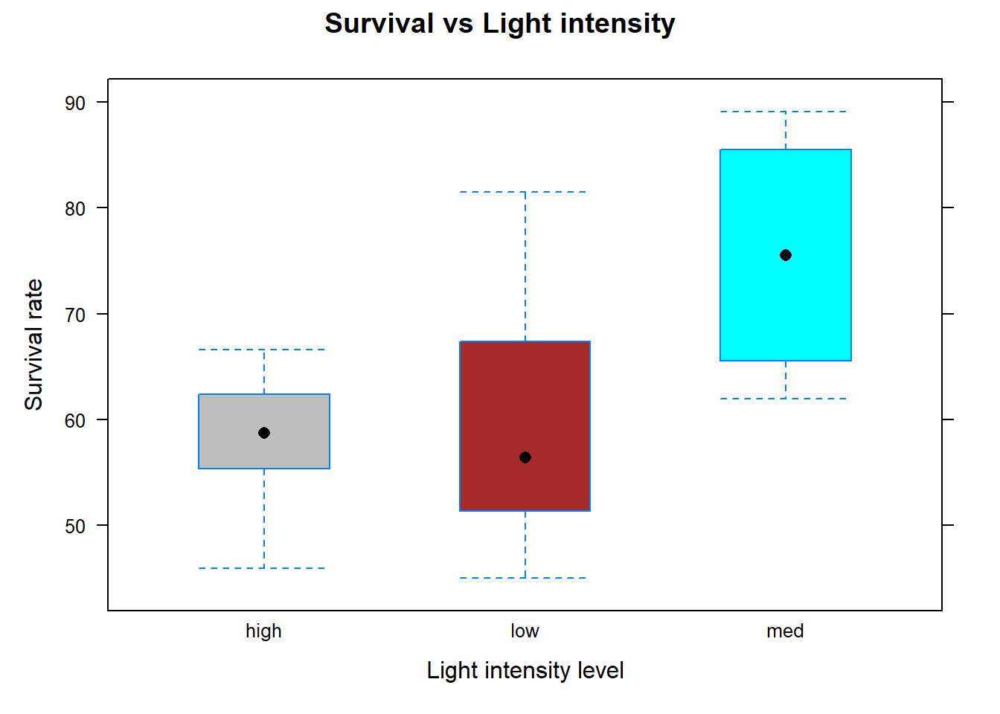
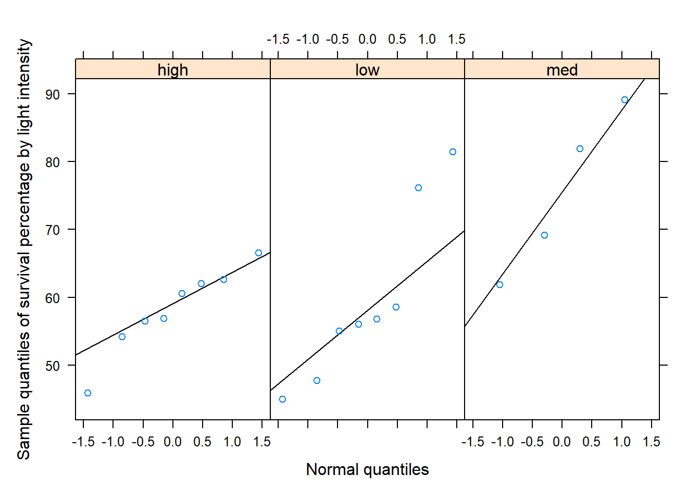
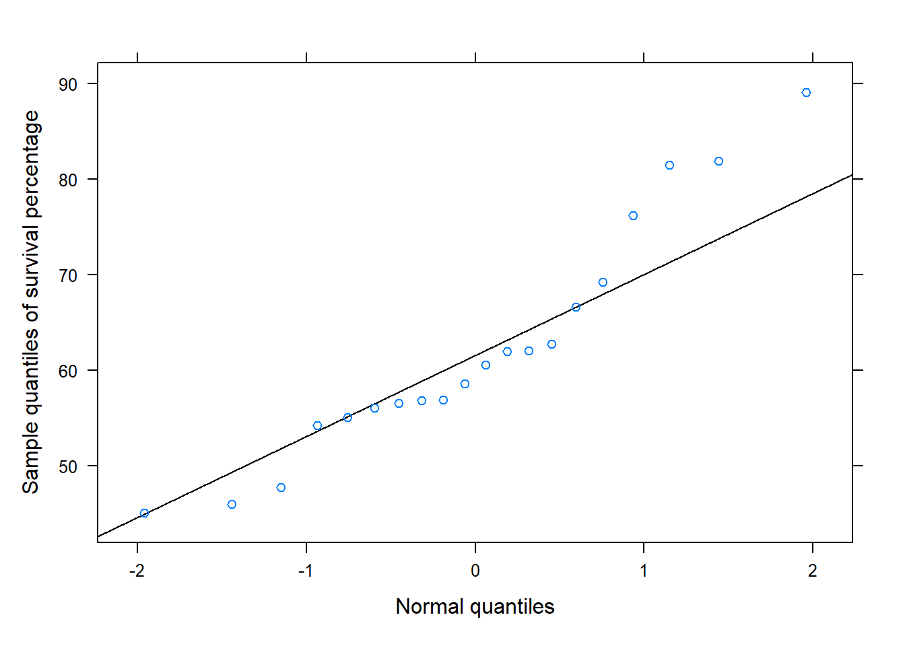

AI art generated from the text “Analysis of variance”
Analysis of Variance (ANOVA) is a statistical method that analyzes the variability of the observations in a dataset and compares it between groups or factor levels to determine if there is a statistically significant difference among them. This section covers the basics of ANOVA, and the following inferential methods for ANOVA:
An F-test to determine whether there is a statistically significant difference among three or more treatments or groups.
A non-parametric alternative to the F-test.
Multiple comparison methods to determine which specific groups or treatments have significant differences.
Equations/formulas used in hypothesis testing or confidence intervals will be kept at a minimum as the focus is on the use of software to carry out these methods. That being said, those new to or not comfortable with hypothesis testing or confidence intervals may want to consider reviewing Chapter 11.
To ensure that statistical inferential methods provide meaningful results, several assumptions are made about the data on which the method is intended to be used.
Data assumptions
The methods discussed here assume one or more of the following assumptions about the data:
Assumption 1. Independence of the observations. Each subject or observation is independent within and across the factor levels or groups or treatments.
Assumption 2. No clear outliers under each factor level or groups or treatments.
Assumption 3. Normality or large sample. The data under each factor level or group or treatment should be roughly normally distributed or the sample for each factor level or group or treatment should be large.
Assumption 4. Equal variance or spread. The variability in each factor level or groups or treatments should be approximately that of any other factor level or group.
While these assumptions are addressed in the illustrations below using a case study, assumption 1 can be evaluated based on study design. Assumption 2 cay be examined using a histogram or boxplots under each group. The normality component of assumption 3 cay be examined using quantile-quantile plots across all groups, and assumption 4 can be graphically assessed using boxplots or histograms under each group and numerically assessed using sample standard deviations.
The terms “factor levels”, “treatments”, and “groups” mean the same thing and will be used interchangeably, although “factor levels” or “treatments” are terms more associated with experiments and “groups” is a term more associated with observational studies. In these sections, R functions provided for conducting the aforementioned inferential methods are used and described. Other functions to import data, numerically or graphically summarize the data, and other tasks may be used but such functions are not described as they have been described and illustrated in detail in previous modules.
Notation
Notation is kept at a minimum but for better readability, but we define the following notation for ANOVA:
\(\mu_1\), \(\mu_2\), …, \(\mu_k\) denote the population or true mean response under each treatment \(1\), \(2\), …, \(k\), respectively.
\(\mu\) denote the population or true mean response across all treatments.
\(\bar{y}_1\), \(\bar{y}_2\), …, \(\bar{y}_k\) denote the sample mean response under treatment \(1\), \(2\), …, \(k\), respectively.
\(s_1\), \(s_2\), …, \(s_k\) denote the sample standard deviation under each treatment \(1\), \(2\), …, \(k\), respectively.
\(\bar{y}=\) sample mean response (across all treatments)
\(n_1\), \(n_2\), …, \(n_k\) denote the number of observations under each treatment \(1\), \(2\), …, \(k\), respectively.
\(n=n_1+n+n_2+\cdots+ n_k\) denote the total number of observations (across all treatment).
\(\eta_1\), \(\eta_2\), …, \(\eta_k\) denote the population or true median response under each treatment \(1\), \(2\), …, \(k\), respectively.
13.1 Single factor or one-way ANOVA
ANOVA partitions the total variability in the data (the sample variance of the all the data) in terms of variability between treatments and the variability within treatments. The variability between groups may be quantified by a measure called the mean square between treatments, denoted by \(MST\) or MS(Treatment)1. The variability within each treatment or group is quantified by the mean square error, denoted by \(MSE\) or MS(Error). The higher the MS(Treatment), the more the variability in the data are due to the differences among factor levels or groups. The higher the MS(Error), the more the variability in the data are due to differences within the groups. In ANOVA, the hypothesis are
\(H_0: \mu_1= \cdots=\mu_k\) (The mean response is the same across all factor levels or treatments)
\(H_a:\) At least one treatment means (\(\mu_1\), \(\mu_2\), …, or \(\mu_k\)) \(\mu_k\) is different from the rest (The mean response is the not same across all factor levels or treatments)
To test the hypothesis, ANOVA compares the variability between groups to the variability within groups and it assesses whether the differences between group means are statistically significant. The ratio of these two measures provides the test statistic for the F-test in single factor ANOVA:
\[F=\frac{ MS(Treatment)}{ MS(Error)}\]
This test assumes assumptions 1-4 are reasonable for the data. Under \(H_0\), the mean response is assumed to be the same across all groups, so any differences between groups can be attributed to random chance or natural variation. If \(H_0\) is true and the mean response is the same across all groups, the variability in the data should be mainly due to variability within groups, so the MS(Treatment) should be small and the MS(Error) should be large (corresponding to a small value of \(F\)). However, if the mean response varies greatly by group, then the variability in the data may be attributed more to this variability between groups rather than due to variability within groups. In this case, the MS(Treatment) would be large and the MS(Error) would be small (corresponding to a large value of \(F\)). Under \(H_0\), the null distribution of \(F\) is an \(F\)-distribution with a numerator degree of freedom \(k-1\) and denominator degree of freedom \(n-k\), and the null distribution is used to compute the p-value.
If instead the variability in each factor level or groups or treatments differs from any other factor level or group, then the F-test for single factor ANOVA is not appropriate. However, a test called Welch’s F-test can be utilized. Welch’s F-test requires assumptions 1-3 be reasonable for the data but it does not require assumption 4. Welch’s F-test uses as a test statistics a ratio of mean squares as the standard F-test but each are weighted by group variances and it is denoted as \(F_w\)2, where
\[F_w=\frac{ MS(Treatment)^w}{ MS(Error)^w}\]
Both \(MS(Treatment)^w\) and \(MS(Error)^w\) are not the mean squares used to define the F-test for single factor ANOVA, but rather a weighted version of sorts to account for unequal spread under each treatment. This helps to correct for unequal variances and ensures that the F-test is more accurate. Under \(H_0\), the null distribution of \(F_w\) is an F distribution with a numerator degree of freedom \(k-1\) and denominator degree of freedom is a non-integer value (resulting for a complicated formula), and this null distribution is used to compute the p-value for Welch’s F-test.
The function sfaov()3 obtains the information needed to conduct an F-test or Welch’s F-test and more using the data.
R functions
### sfaov( y ~ x , data , welch )
# y: Replace y with the name of the resposne (measured)
# variable of interest.
# x: Replace x with the name of the factor or grouping
# variable that distinguishes the different populations
# or treatments.
# data: Set equal to the dataframe name
# welch: Set to TRUE (default) if 'Equal variance or spread'
# assumption is reasonable. Otherwise, set equal to FALSE.
#
Many of the R functions used in these modules will have identical arguments. Therefore, while the arguments will be provided for any functions used, arguments such as y, x, data, and welch will generally no longer be described in this module.
Note
We apply an ANOVA F-test to the data described in the case study provided in Chapter 1 to determine if light intensities have a significant effect on survival rates of early-stage Delta smelt larvae. The data provided in the case study consists of three variables (Light, Turbidity, and Survival) with Light and Survival being the variables of interest. There are three levels of light intensity: 4.5 (low), 6.75 (medium), and 9 (high). Our aim here is to determine whether light intensity has a significant effect on the survival of the larvae at \(\alpha=.10\).
To begin, we import the data, and then one would explore the data using numerical and graphical data summaries. Numerical and graphical data explorations were covered in other modules. However, we also use these type of summaries to assess model assumptions.
# Import data survdf<-read.csv("datasets/dssurv.csv")# Obtain the names of the variables in the data framenames(survdf)#> [1] "Light" "Turbidity" "Survival"# Load the dplyr packagelibrary(dplyr)# provides the mutate() function# Convert the "Light" and "Turbidity" variables to factors # using the mutate() function. survdf<-mutate(survdf, Light =as.factor(Light), Turbidity =as.factor(Turbidity))# Summarize the variables in the data frame using the summary() functionsummary(survdf)#> Light Turbidity Survival #> high:8 high:8 Min. :45.02 #> low :8 low :8 1st Qu.:55.79 #> med :4 med :4 Median :59.56 #> Mean :62.22 #> 3rd Qu.:67.24 #> Max. :89.09# Load the lattice package for graphing functionslibrary(lattice)bwplot(Survival~Light , # y ~ x data=survdf , # Specify dataframe xlab="Light intensity level" , # Set x-axis label ylab="Survival rate" , # Set y-axis label main="Survival vs Light intensity" , # Specify plot title fill=c("gray", "brown", "cyan"))# Specify color for each plot

Code
# Source the function "normqqplot.R" so that # it's in R's memory.source("rfuns/normqqplot.R")# this function creates a normal QQ-plot# Create a normal QQ-plot under each groupnormqqplot(~Survival|Light , # ~ x | gfactor data=survdf , ylab="Sample quantiles of survival percentage by light intensity")

Code
# Create a normal QQ-plot across all groupsnormqqplot(~Survival, # ~ x data=survdf , ylab="Sample quantiles of survival percentage")

Code
# Load the mosaic package library(mosaic)# provides formula expression in sd()# Calculate the mean "Survival" for each "Light" levelmean(Survival~Light , data=survdf)#> high low med #> 58.18500 59.60625 75.51750# Calculate the standard deviation "Survival" for each "Light" levelsd(Survival~Light , data=survdf)#> high low med #> 6.345415 12.809045 12.242073
The difference in samples means under intensity level 6.75 differs from that intensity level 4.5 and 9. We use an ANOVA F-test to determine if at least one of the true means significantly differs from the rest. However, first the assumptions about the data are considered. While samples are not random, there are no obvious reasons why independence would not hold for these observations in that that survival rates under a given intensity should no have no connection to the survival rate under any other intensity level. The summary() output shows that the sample for each group is small. It can be difficult to assess the normality assumptions with such few observations, especially under light intensity 6.75. When considering the data across all groups, the QQ-plot suggests the data show some skewness. The researcher should either feel comfortable assuming normality based on prior experience or a literature review. Otherwise, it is difficult to say if this assumption about the data are reasonable for small samples.
The boxplots suggest that the variability is not the same for the three groups. To further assess this assumption numerically, we use the sample standard deviations. The sample standard deviations under light intensity 4.5 and 6.75 are similar (12.809 and 12.242), but the sample standard deviation under high light intensity is much less. To determine if the variability in both groups is similar enough, we can use a rule of thumb - take the ratio of the largest and smallest sample standard deviations (12.809/6.345 or 6.345/12.809), and if the ratio is between .5 and 2, then the variability in both groups is considered similar enough. Both graphical and numerical assessments suggest that assumption 4 is not reasonable for the data. However, keep in mind that graphical assessments of assumptions are generally enough, and this rule of thumb should not be used if outliers are present.
Overall, not all data assumptions are met. Please note that possible remedial measures can be applied when one or more assumptions are not met, and these measures are discussed in Section 14.4 in the context of linear regression and they also apply to the ANOVA setting. Alternative methods to be discussed would be more appropriate for this data, but for illustration, we analyze the data using the F-test in single factor ANOVA. Let \(\mu_1\) denote the true mean survival rate under low light intensity. \(\mu_2\) and \(\mu_3\) are defined similarly for light intensities medium and high, respectively. Since the aim is to determine whether light intensity has a significant effect on the survival of the larvae, the hypothesis is
\[H_0: \mu_1=\mu_2=\mu_3 \qquad H_a: \text{Not all } μ_i\text{'s are equal}\]
In the context of ANOVA, we may also define the hypothesis in terms of an effect. Let \(\tau_i= \mu - \mu_i\), where \(\tau_i\) measures the effect of the \(i\)th factor level. The \(i\)th effect is the difference between the overall mean and the mean of \(i\)th factor level. In terms of effects, the hypothesis is
\[H_0: \tau_1=\tau_2=\tau_3=0 \qquad H_a: \text{Not all }\tau_i\text{'s are 0}\]
The following code uses sfaov() to compute the test statistic and the corresponding p-value for an F-test in single factor ANOVA:
# Source the function so that it's R's memory.source("rfuns/sfaov.R")# The function will require the following information:# y: Replace with 'Survival'.# x: Replace with 'Light'.# data: set equal to a 'survdf'.# welch: default is FALSE so it does not # need to be provided.sfaov(Survival~Light , data=survdf)#> One-way analysis of means (assuming equal variances) #> #> data: Survival ~ Light #> ============== #> ANOVA Table #> Df Sum Sq Mean Sq F value p-value#> Treatment 2 892.2 446.10 4.034 0.037#> Error 17 1880.0 110.59 #> ============== #> #> R-squared= 0.475
The R output provides part of what is called an ANOVA table. An ANOVA table is a table that summarizes the results of an ANOVA test. It displays the sources of variation (Treatment [between groups], Error [within groups]), degrees of freedom, sums of squares, mean squares, F-test test statistic, and p-value4. Below is a general form of ANOVA table.
Source of Variation
Sum of Squares (SS)
Degrees of Freedom (df)
Mean Square (MS)
F-test Statistic
p-value
Treatment (Between)
SS(Treatment)
df(Treatment)
MS(Treatment)
F
p-value
Error (Within)
SS(Error)
df(Error)
MS(Error)
Total
SS(Total)
df(Total)
The output also provides the coefficient of determination or \(R^2\). \(R^2\) is a number between 0 and 1, and it measures the proportion of variability in the response that can be explained or accounted for by the factor variable, and it is defined as SS(Treatment)/SS(Total). The higher \(R^2\), the larger the proportion of the total variation that is accounted for by the factor variable. However, either a high or low value of \(R^2\) does not necessarily imply statistical significance.
Based on the output, the observed value of the test statistic is \(F=4.034\). The p-value is \(.037\). Since p-value\(\leq\alpha=.10\), we have significant evidence to reject \(H_0\) at \(\alpha=.10\). Based on the size of the p-value, we may also say that there is strong evidence to reject \(H_0\). Note that by setting \(\alpha=.10\), it is conveyed to the reader that at most “some evidence” is needed to reject \(H_0\) and support what is reflected in \(H_a\). Overall, at \(\alpha=.10\), light intensity has a significant effect on the survival of the larvae. Although the data provides some evidence that light intensity affects survival rates, we can not say if changes in light intensity causes changes in survival rates because the treatments (low, medium, and high light intensities) were not randomly assigned. Further, because the subjects were not randomly selected from some larger population, the findings that survival rates are affected by the strength of light intensity only applies to those subjects in the sample and not some larger population.
Recall that not all data assumptions are met (assumptions 3 and 4 are questionable). Welch’s F-test does not require assumption 4. We will assume assumption 3 is met for the data to illustrate Welch’s F-test. To carry out Welch’s F-test, we use sfaov() but with an additional argument of welch=TRUE:
# The function will require the following information:# y: Replace with 'Survival'.# x: Replace with 'Light'.# data: Set equal to a 'survdf'.# welch: Set equal to TRUE.sfaov(Survival~Light , data=survdf, welch =TRUE)#> One-way analysis of means (not assuming equal variances) #> #> data: Survival ~ Light #> ============== #> ANOVA Table #> Df Sum Sq Mean Sq F value p-value#> Treatment 2.000 892.2 446.10 3.236 0.101#> Error 7.037 1880.0 110.59 #> ============== #> #> R-squared= 0.475 #> #> Note: The Df for the Error component, F value and p-value provided are for Welch's F-test
The sfaov() output is nearly identical when using sfaov() to conduct the standard F-test but with the F value, p-value, and df(Treatment) corresponding to Welch’s F-test. The rest of the information is defined as before. Note that \(R^2\) still has the same meaning, as do MS(Treatment) and MS(Error), and their computations are independent of Welch’s F-test.
Note that Welch’s F-test provides \(F_w=4.034\), with a corresponding p-value of \(0.101\). Since p-value\(>\alpha=.05\), we do not have significant evidence to reject \(H_0\) at \(\alpha=.05\). The size of the p-value reflects that that there is very little evidence to reject \(H_0\). Overall, at \(\alpha=.05\), Welch’s F-test shows that there is not enough evidence to conclude that light intensity has a significant effect on the survival of the larvae.
13.2 Kruskal–Wallis test (single-factor ANOVA for ranks)
Kruskal–Wallis test is sometimes referred to as a single-factor ANOVA for ranks. The Kruskal-Wallis test is similar to a single factor ANOVA test, but does not make assumptions about the normality and is useful when the data are ordinal (e.g. Likert item data). However, it does require that the distribution of the data under each factor level or group be roughly the same shape. It is a non-parametric test alternative to the F-test that tests whether there are significant differences between the medians of two or more treatments or groups.
Like ANOVA, it partitions the total variability in the data but when using the ranks of the data (not the data themselves). For the Kruskal–Wallis test, the hypotheses are
\(H_0: \eta_1= \cdots=\eta_k\) (The median response is the same across all factor levels or treatments)5
\(H_a:\) At least one treatment medians (\(\eta_1\), \(\eta_2\), …, or \(\eta_k\)) is different from the rest (The median response is the not same across all factor levels or treatments)
Where MSranks(Treatment) denotes the mean of square treatment of the ranked data, and SSranks(Total) is the total sum of squares of the ranked data. Under \(H_0\), the null distribution of \(H\) is a \(\chi^2\)-distribution degree of freedom \(k-1\), and the null distribution is used to compute the p-value.
The function sfkw()6 obtains the information needed to conduct the Kruskal–Wallis test using the data.
R functions
### sfkw( y ~ x , data )
#
Note
Here, we apply the Kruskal–Wallis test to the data described in the case study provided in Chapter 1 to determine if light intensities have a significant effect on survival rates of early-state Delta smelt larvae. Recall that Light and Survival are the variables of interest, and that there are three levels of light intensity: 4.5 (low), 6.75 (medium), and 9 (high). Our aim here is to determine whether light intensity has a significant effect on the survival of the larvae at \(\alpha=.10\) using the Kruskal–Wallis test.
The data was imported and data assumptions were assessed when the F-test was applied in the previous section. Below we examine the medians and further explore the distribution of the data.
library(mosaic)# allows formula expression in median and iqrmedian(Survival~Light , data=survdf)#> high low med #> 58.720 56.420 75.525iqr(Survival~Light , data=survdf)#> high low med #> 6.2400 9.7375 16.3225
The difference in samples medians under intensity level 6.75 differs from intensity levels 4.5 and 9. The violin plots suggest that the data under each treatment do not all follow the same distribution. This means we can not assess if the medians under each treatment differ but we formulate the hypothesis in terms of the mean of the ranks:
\(H_0:\) The mean ranks of survival under each light intensity are the same
\(H_a:\) Not all the mean ranks of survival under each light intensity are the same
The following code uses sfkw() to compute the test statistic and the corresponding p-value for the Kruskal–Wallis test:
# Source the function so that it's R's memory.source("rfuns/sfkw.R")# The function will require the following information:# y: Replace with 'Survival'# x: Replace with 'Light'# data: Set equal to a 'survdf'sfkw(Survival~Light , data=survdf)#> Kruskal-Wallis test (single-factor ANOVA on ranks) #> #> data: Survival ~ Light #> ============== #> Kruskal-Wallis test statistic= 5.668 #> p-value= 0.059 #> Null distribition is chi-squared with df= 2 #> ============== #> #> Eta-squared= 0.2157563
The output provides the Kruskal-Wallis test statistic and corresponding p-value. The output also provides a measure akin coefficient of determination in traditional ANOVA called rank Eta or eta-squared. The measure eta-squared is appropriate for when the data are ranks, and it provides the proportion of the total variation in the response variable that is explained by the explanatory variable. Again, Eta-squared can be considered a non-parametric analogue to \(R^2\).
Based on the output, the observed value of the test statistic is \(H=5.668\). The p-value is \(0.059\). Since p-value\(\leq\alpha=.10\), we have have significant evidence to reject \(H_0\) at \(\alpha=.10\). Note that the size of the p-value suggests there is some moderate evidence to reject \(H_0\). Overall, at \(\alpha=.10\), light intensity has a significant effect on the survival of the larvae (in terms of mean ranks of survival rates).
13.3 Multiple comparisons
If \(H_0\) is rejected, it implies significant differences between the treatments or groups. However, this result does not indicate which specific groups differ from each other. Multiple comparisons refer to the process of making all pairwise comparisons between two or more groups when there are significant differences between the groups. These comparisons can be accomplished using a two-sample methods on all possible pairs. The scenario of testing many pairs of groups is called multiple comparisons.
There are a few problems associated with blindly carrying out two-sample methods on all possible pairwise comparisons
The comparisons are not being done simultaneously and are being carried out individually with no regard to the other tests (comparisons).
The more pairwise comparisons conducted, the higher the chances of making at least one type I error among all the comparisons.
Multiple comparisons in ANOVA are used to determine which specific groups or treatments are significantly different from each other. These procedures adjust the p-value and confidence level of each comparison so that the family-wise error rate (the probability of making at least one Type I error across all multiple comparisons), is at most \(\alpha\). We discuss a few multiple comparison methods that control the family wise error rate (FWER).
13.3.1 Tukey’s HSD method
In ANOVA, the most common method for multiple comparisons is called Tukey’s Honest Significant Difference (HSD) method. Tukey’s HSD method is used in single-factor ANOVA, and it adjusts the p-value or confidence level for each pairwise comparison to control the FWER for all possible pairwise comparisons, rather than for individual comparisons.
Recall that the function sfaov() can be used to conduct single-factor ANOVA. This function can also then conduct Tukey’s HSD method to adjust the p-values or confidence intervals for all pairwise comparisons among group or treatment means.
R functions
### sfaov( y ~ x , data , PWC, conf.level )
# PWC: Set equal to true to conduct all pairwise comparisions using
# Tukey's HSD method. Default is FALSE
# conf.level: Set equal to desired confidence level for all pairwise comparision. Default is .95
#
Note
Recall that we applied the ANOVA F-test to the data described in Chapter 1 and determined that light intensities have a significant effect on survival rates of early-stage Delta smelt larvae at \(\alpha=.10\). Thus, the mean survival rates under each intensity are not all the same, but it is not clear how they differ. To determine how they differ, we apply Tukey’s HSD method at \(\alpha=.10\)
The following code uses sfaov() to help conduct the ANOVA F-test and pairwise multiple comparisons using Tukey’s HSD method at \(\alpha=.10\)7.
# Source the function so that it's R's memory.source("rfuns/sfaov.R")# The function will require the following information:# y: Replace with 'Survival'.# x: Replace with 'Light'.# data: Set equal to a 'survdf'.# PWC: Set equal to TRUE.# conf.level: Set equal to .90.sfaov(Survival~Light , data=survdf , PWC=TRUE , conf.level=.90)#> One-way analysis of means (assuming equal variances) #> #> data: Survival ~ Light #> ============== #> ANOVA Table #> Df Sum Sq Mean Sq F value p-value#> Treatment 2 892.2 446.10 4.034 0.037#> Error 17 1880.0 110.59 #> ============== #> #> R-squared= 0.475 #> #> #> Sample group means: high-58.18 low-59.61 med-75.52 #> #> Tukey multiple comparisons of means #> diff lwr upr p adj#> low-high 1.42125 -10.142221 12.98472 0.96061638#> med-high 17.33250 3.170198 31.49480 0.03898149#> med-low 15.91125 1.748948 30.07355 0.06006956
The output from sfaov() now provides the results of Tukey’s HSD method which displays the difference in the sample treatment means, confidence interval, and p-value for each pairwise comparison. Note that the first confidence interval compares low to medium light intensity (CI for \(\mu_1-\mu_2\) and p-value for testing \(\mu_1-\mu_2\neq 0\)). The comparisons that follow are for \(\mu_1-\mu_3\) and \(\mu_2-\mu_3\). Tukey’s HSD pairwise comparisons reveal significant differences in mean survival rates between different levels of light intensity at FWER of \(.10\). Specifically, the mean survival rate under medium light intensity is significantly different from both low and high light intensity (in terms of pairwise comparisons). Additionally, the mean survival rates between low and high light intensity were not significantly different from each other.
13.3.2 Games-Howell test
The Games-Howell test is a method for performing pairwise multiple comparisons when using Welch’s F-test. This test is somewhat similar to Tukey’s HSD method. Recall that the function sfaov() can be used to conduct Welch’s F-test. This function can also then conduct the Games-Howell test to adjust the p-values or confidence intervals for all pairwise comparisons among group or treatment means.
R functions
### sfaov( y ~ x , data , PWC, conf.level, welch )
# PWC: Set equal to true to conduct all pairwise comparisions using
# Tukey's HSD method. Default is FALSE.
# conf.level: Set equal to desired confidence level for all pairwise comparision. Default is .95.
# welch: Set equal to TRUE for Welch's F-test.
#
Note
Recall that we applied the Welch’s F-test to the data described in Chapter 1 and it was determined that light intensities did not have a significant effect on survival rates of early-stage Delta smelt larvae at \(\alpha=.10\). Thus, the data did not provide enough evidence to conclude that survival rates under each intensity are different. However, to illustrate the procedure in R, we perform multiple pairwise comparisons using the Games-Howell test at \(\alpha=.10\).
The following code uses sfaov() to conduct the Welch’s F-test and all pairwise multiple comparisons using the Games-Howell test at \(\alpha=.10\):
# Source the function so that it's in R's memory.source("rfuns/sfaov.R")# The function will require the following information:# y: Replace with 'Survival'.# x: Replace with 'Light'.# data: Set equal to a 'survdf'.# PWC: Set equal to TRUE.# conf.level: Set equal to .90.# welch: Set equal to TRUE.sfaov(Survival~Light , data=survdf , PWC=TRUE, conf.level=.90, welch=TRUE)#> One-way analysis of means (not assuming equal variances) #> #> data: Survival ~ Light #> ============== #> ANOVA Table #> Df Sum Sq Mean Sq F value p-value#> Treatment 2.000 892.2 446.10 3.236 0.101#> Error 7.037 1880.0 110.59 #> ============== #> #> R-squared= 0.475 #> #> Note: The Df for the Error component, F value and p-value provided are for Welch's F-test #> #> Sample group means: high-58.18 low-59.61 med-75.52 #> #> Games-Howell multiple comparisons of means #> groups diff lwr upr p adj#> 1 low : high 1.421 15.222 -12.380 0.958#> 2 low : med -15.911 7.067 -38.889 0.168#> 3 high : med -17.332 6.385 -41.050 0.120
The R output from sfaov() now provides the results of the Games-Howell test and it displays the difference in the sample treatment means, confidence interval, and p-value for each pairwise comparison. Note that the first confidence interval compares low to high light intensity (CI for \(\mu_1-\mu_3\) and p-value for testing \(\mu_1-\mu_3\neq 0\)). The comparisons that follow are for \(\mu_1-\mu_2\) and \(\mu_3-\mu_2\). The Games-Howell test for pairwise comparisons reveal that there are no significant differences in mean survival rates between different levels of light intensity at FWER=\(.10\).
13.3.3 Dunn test
A common multiple pairwise comparisons method to compliment the Kruskal-Wallis test is Dunn’s test with Holm’s correction. Holm’s correction is what is called a step-down method that adjusts the p-values all pairwise comparisons among group or treatment means to account for multiple testing. Recall that the function sfkw() can be used to conduct the Kruskal–Wallis test. This function can also then conduct the Dunn’s test with Holm’s correction to adjust the p-values for all pairwise comparisons among group or treatment means8.
R functions
### sfkw( y ~ x , data , PWC )
# PWC: Set equal to true to conduct all pairwise comparisions using
# Tukey's HSD method. Default is FALSE
#
Note
Recall that we applied the Kruskal-Wallis test to the data described in Chapter 1 and determined that light intensities did have an significant effect on survival rates of early-stage Delta smelt larvae at \(\alpha=.10\). The following code uses sfkw() to help conduct the Kruskal-Wallis test and all pairwise multiple comparisons using Dunn’s method with Holm’s correction at \(\alpha=.10\):
# Source the function so that it's in R's memory.source("rfuns/sfkw.R")# The function will require the following information:# y: replace with 'Survival'# x: replace with 'Light'# data: set equal to a 'survdf'# PWC: set equal to TRUEsfkw(Survival~Light , data=survdf , PWC=TRUE)#> Kruskal-Wallis test (single-factor ANOVA on ranks) #> #> data: Survival ~ Light #> ============== #> Kruskal-Wallis test statistic= 5.668 #> p-value= 0.059 #> Null distribition is chi-squared with df= 2 #> ============== #> #> Eta-squared= 0.2157563 #> #> Sample group medians: high-58.72 low-56.42 med-75.525 #> #> Comparison Z P.unadj P.adj#> 1 high - low 0.295804 0.76737978 0.76737978#> 2 high - med -2.035693 0.04178115 0.08356230#> 3 low - med -2.277216 0.02277331 0.06831993
The output from sfkw() now provides the results of Dunn’s test, displaying adjusted p-values (P.adj) for each comparison. Note that the first comparison is comparing low to medium light intensity with the last comparison being between medium and high light intensity. Dunn’s test for pairwise comparisons reveals significant differences in survival rates between different levels of light intensity at FWER of \(.10\). Specifically, the survival rate under medium light intensity is significantly different from both low and high light intensity (in terms of pairwise comparisons). Additionally, survival rates between low and high light intensity were not significantly different from each other. Note that the comparisons are being done in terms of mean ranks since the data distribution under each treatment did not follow the same shape.
13.4 Sample size estimation and power analysis for ANOVA
Ideally, estimating the sample size for a study is one of the first things that researchers do prior to collecting data. Knowing the required sample size to detect a desired effect at the beginning of a project allows one to manage their data collection efforts. Furthermore, this allows for one to determine how much statistical power the test will have to detect an effect if it exist.
The R function pwr.anova.test() from the pwr R package calculates statistical power for a balanced single-factor ANOVA, given the sample size, significant level (\(\alpha\)), and effect size. Note that all treatments are assumed to have the same number of observations, which is known as a “balanced” design. It is assumed that the appropriate assumptions about the data are met9.
R functions
### pwr.anova.test( n , delta , sd1 , sd2 , sig.level ,
### power, alternative)
# k: Set equal to the number of groups/treatments.
# n: Set equal to the number of observations per group.
# f: Set equal to the effect size.
# sig.level: Set equal to the desired alpha value (significance level).
# power: Set equal to the desired power (a number between 0 and 1).
#
The effect size refers to Cohen’s \(f\), which is defined as the standard deviation of the k treatment means divided by standard deviation (across all groups). Cohen’s f is typically interpreted as follows:
Small effect size: \(f = 0.10\)
Medium effect size: \(f = 0.25\)
Large effect size: \(f = 0.40\) or higher.
These are suggested guidelines and may vary slightly depending on the specific field of research or context of the study.
Note
Suppose we want to determine the statistical power to detect a medium-sized effect assuming five observations per group and at significance level of \(\alpha=.01\) and \(\alpha=.10\). Recall that there are three groups:
Code
# Load the "pwr" packagelibrary(pwr)# Provides pwr.anova.testpwr.anova.test(k =3 , n =5 , f =.25 , sig.level =.01)#> #> Balanced one-way analysis of variance power calculation #> #> k = 3#> n = 5#> f = 0.25#> sig.level = 0.01#> power = 0.02811243#> #> NOTE: n is number in each group
The statistical power of this test is low. To increase the power, one may increase the effect size (the larger it is, the easier it is to detect), increase \(\alpha\) (make it easier to reject \(H_0\) and find a significant effect), and/or increase the number of observations per group.
The MST is also commonly referred to as the mean square between groups (MSG).↩︎
The formulation of Welch’s F-test for single-factor ANOVA is much more complicated but a weighted ratio of mean squares is the basic idea.↩︎
sfaov() is a wrapper function for aov(), oneway.test(), and TukeyHSD() and it incorporates additional options. A wrapper function is a function that calls another function or a set of functions to simplify or extend tasks↩︎
SS(Treatment) refers to the sum of squares Treatment. The rest of table elements are defined in an analogous manner for the SS, df, and MS. SS(Total) is a measure of the total variation in the data, ignoring the groups or treatments. The sum of squares treatment or SS(Treatment) measures how far the individual sample means are from the overall sample mean, and the sum of squares error or SS(Error) measures how far observations are from the sample mean of its group.↩︎
If the data distribution under each treatment does not follow the same shape, this test may still be used but it will longer be testing differences in true medians, but rather differences in true means ranks so interpretation becomes more troublesome, but nevertheless can show there the groups are different using this measure.↩︎
sfkw() is a wrapper function for kruskal.test() but it incorporates additional options.↩︎
Significance or \(\alpha\) level equals one minus the confidence level. For example, if \(\alpha=.05\), the corresponding confidence level is \(1-\alpha=1-.05=.95\).↩︎
The aim of Dunn’s test is to provide a set of p-values that represent the probability of observing the observed difference in median ranks between two groups by chance alone. Since Dunn’s test does not rely on any distributional assumptions like Welch’s F-test or the standard F-test, it is not possible to calculate confidence intervals for the differences between the groups.↩︎
There are R functions to compute for the Kruskal-Wallis test or Welch’s F-test, these functions may be difficult to use for those not familiar with power analysis.↩︎